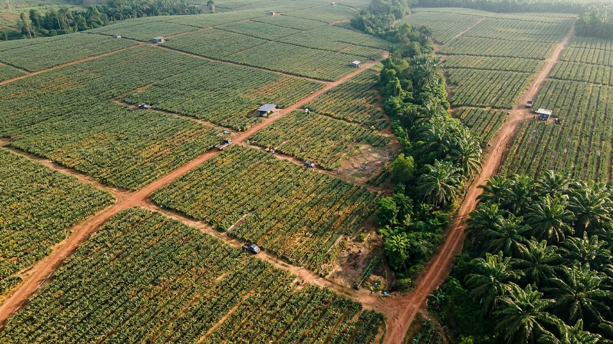
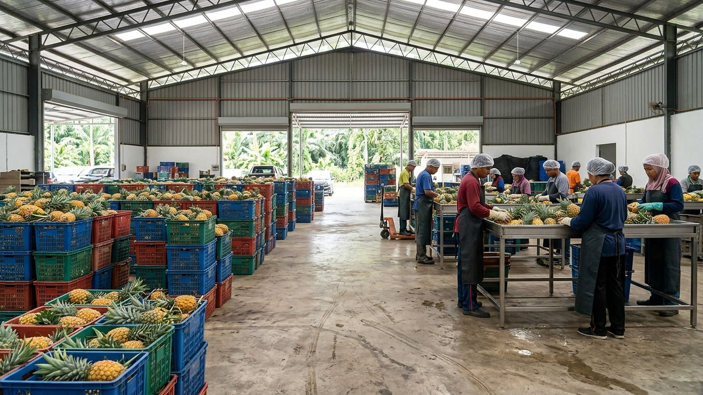
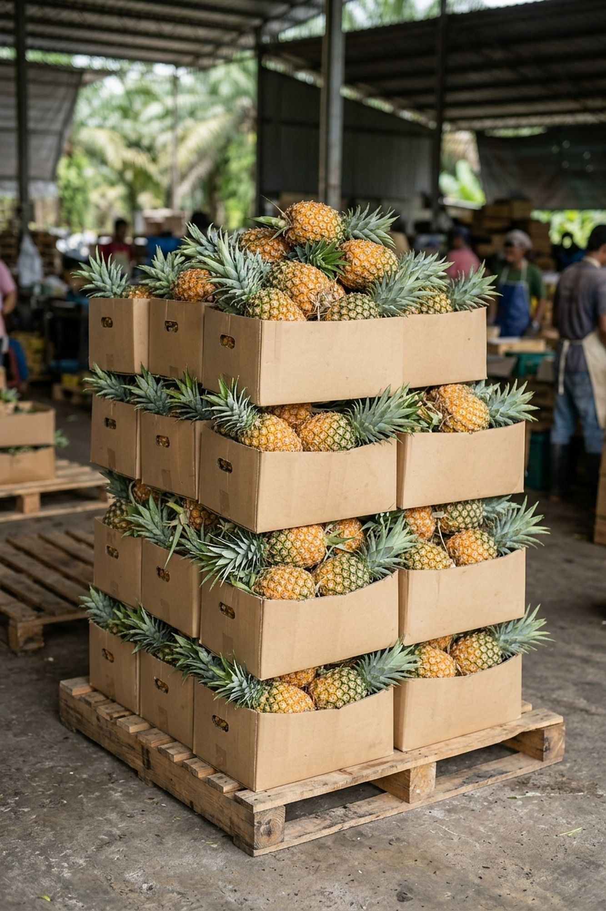
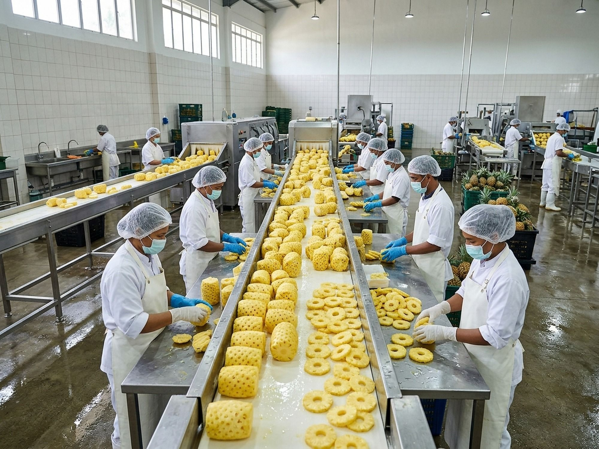
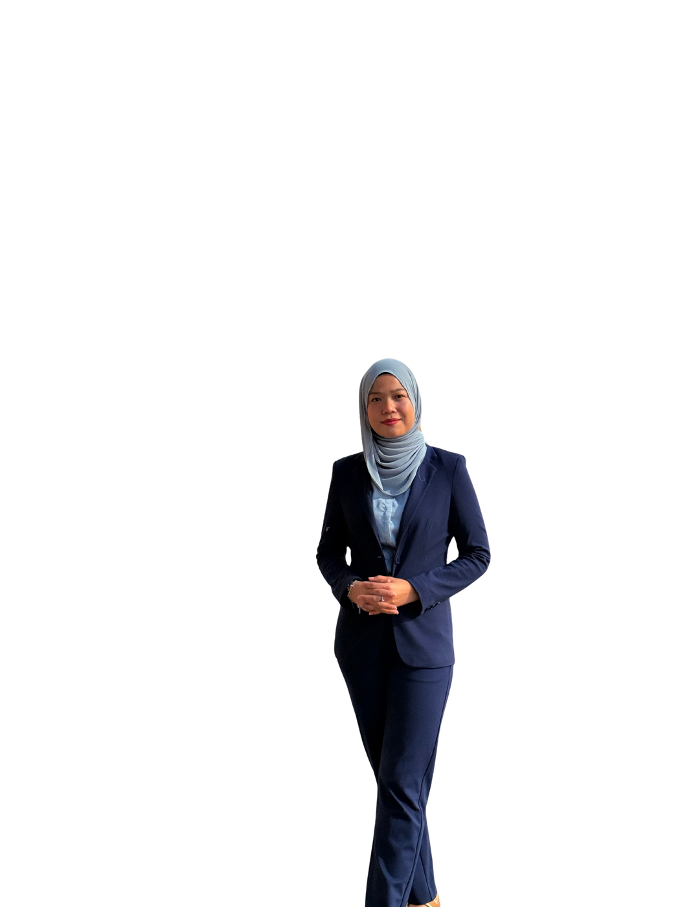

Rooted in Farming. Connected to the World.
MD2 & SG1 pineapple600+ acres50 t/day6 markets

 Illustrative
Illustrative


 Illustrative
Illustrative
- Japan
- Korea
- China
- UAE
- Saudi
- Europe

Scroll the supply chain
One integrated agribusiness
Farmers Grow. Agrionyx Connects the Ecosystem.
 Illustrative
Illustrative Illustrative
IllustrativeUpstream · farm and produce
When our farmers grow, our people grow.
Own MD2 and SG1 farms plus a contract network in 6 states feed one centre. We plan the planting, support the agronomy and collect at harvest. Farm with us
- 40+acresOwn farms, MD2 and SG1
- 50+Contract farmers
- 600+acresIn the network, 2,000 by 2028
- Perlis
- Gerik, Perak
- Gambang, Pahang
- Seremban, N. Sembilan
- Jasin, Melaka
- Pontian, Johor (own SG1)
- CPPC, Sepang

IllustrativeIllustrative
Illustrative
IllustrativeRoom 1 · Receiving
Every farm’s harvest, in one place
0sq ftCrates from our farms and contract growers arrive at Labu Lanjut, Sepang, and are logged by farm and variety.
Room 2 · Grading line
Sorted, graded, packed
0t / dayFruit is sorted and graded to the buyer’s spec, then packed. Grade specs and Brix [client to confirm].
Room 3 · Cold rooms
Held cold until it ships
0cold roomsPacked fruit waits in three cold rooms, close to KLIA for air and Port Klang for sea.
Room 4 · IQF
Frozen piece by piece
IQFyear-roundPineapple is peeled, cut and individually quick frozen for processors and importers. Cuts [client to confirm].
Inside the CPPCCollection, Processing and Packaging Centre · real photo
Downstream · global market access
From Malaysian Farms to Global Markets
Wholesalers across Malaysia, or importers abroad by air from KLIA and by sea from Port Klang.
Illustrative- JapanFresh and IQF
- South KoreaSince 2024
- ChinaMeetings and signings
- UAESigning in the UAE
- Saudi ArabiaGulf importers
- EuropeImporters, processors
What we grow
MD2 and SG1, fresh and IQF frozen
Every product is quoted by volume and destination, by the carton or the container. Ask for specs and we reply on WhatsApp.
Real and established
More Than a Supplier. An Integrated Partner.
Our building, ceremonies and trade fairs: real photos.


- SecretaryMalaysia Pineapple Exporters Association (MAPEA)
- Deputy ChairmanMalaysia SG1 Pineapple Association
-
Khairul Anuar Mohd Shah
Co-Founder and MD. UPM Agricultural Science, 13+ years in agribusiness.

Dr Siti Nur Syuhada Musa
Director and Strategic Advisor. HRD Corp accredited trainer.
Four doors into the centre
Source, Farm, Build, Grow with us
We build ecosystems, not transactions. Pick the door that fits you.
IllustrativeMD2 and SG1, fresh and IQF, by the carton or the container.
Send a brief Illustrative
IllustrativeA contract, technical support and a buyer for your crop.
Join the network Render
RenderFarm and processing projects, planned and run to commercialisation.
Projects and consulting
Training in cultivation, post-harvest and export readiness.
Training